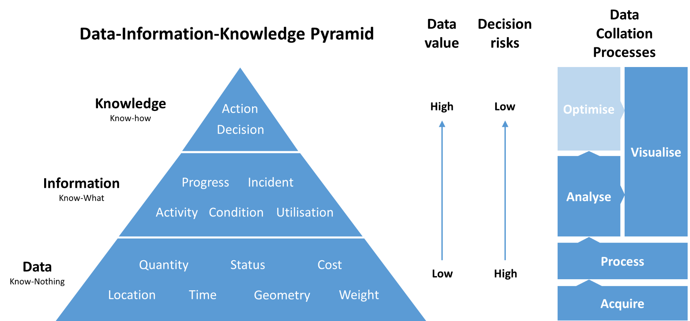
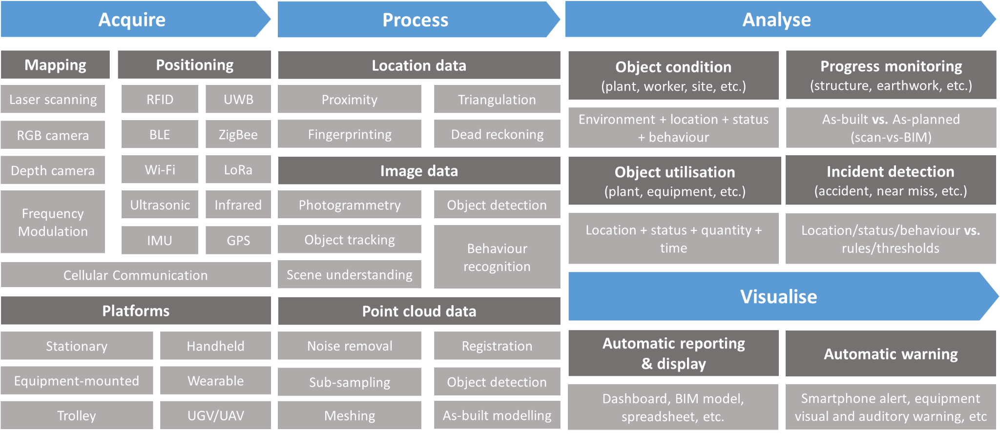

This project investigated how field data can be captured, integrated, and used to support real-time operational management on construction sites. Construction projects often suffer from limited visibility of site activities, fragmented information flows, and delayed reporting, which constrain timely decision-making and coordination. This project examined how passive data collection, sensing technologies, Internet of Things systems, and analytics can improve the monitoring of workers, equipment, materials, site conditions, and construction progress. It reviewed state-of-the-art technologies for real-time mapping, scene understanding, positioning, and activity tracking, and assessed their potential through field-oriented validation and implementation planning. The research identified practical pathways for transforming raw site data into actionable operational intelligence. Its outcomes support the development of more connected, responsive, and data-driven construction management systems, enabling better productivity, safety, coordination, and project control.

